A procedure is more than its body
A closure packages a function’s parameter, its body, and the environment where the function was created. The captured environment explains the meaning of free variables in that body. Creating a closure does not evaluate the body.
In lexical scope, variable references refer to the nearest enclosing declaration in the program text. The place where a function is called does not change those declarations.
let lexical_example =
let x = 10 in
let f y = x + y in
let x = 90 in
(f 3, x)
(* (13, 90) *)
The later x is a different binding. The result of f 3 is 13 because the body’s free x refers to the earlier declaration.
Draw creation and application separately

View Mermaid source
flowchart TD
accTitle: Closure creation and lexical application
accDescr: The caller supplies the argument while the closure supplies the environment for the body.
A["Caller environment<br/>x = 90"] -->|"evaluate argument 3"| D["Argument value: 3"]
A -->|"lookup f"| B["Closure<br/>parameter y; body x + y"]
B -->|"captures at creation"| C["Saved environment<br/>x = 10"]
C --> E["Body environment<br/>y = 3, x = 10"]
D --> E
E --> F["10 + 3 = 13"]
The call rule uses two different environments for two different jobs:
- Evaluate the function expression in the caller’s environment to obtain a closure.
- Evaluate the argument expression in the caller’s environment to obtain an argument value.
- Extend the closure’s saved environment with the parameter bound to that value.
- Evaluate the body in this new environment.
The function saves x = 10. A later x = 90 changes only the caller. Calling f with 3 returns 13.
The OCaml representation
For a toy interpreter, the essential shape is:
type value =
| Integer of int
| Closure of string * expression * environment
and expression =
| Literal of int
| Variable of string
| Function of string * expression
| Apply of expression * expression
and environment = (string * value) list
These mutually recursive types reflect the model: environments contain values; a closure value contains an environment. This is not automatically a cyclic data structure. A normal closure can simply point to an already constructed environment.
Free variables tell you what must be remembered
In proc y (x + y), y is bound by the procedure and x is free relative to that procedure. The surrounding program may still bind x. “Free in a subexpression” and “free in the complete program” are different claims.
A correct implementation may save the entire environment for simplicity. An optimized implementation can save only the bindings for the body’s free variables. This is a representation choice; it must preserve the same lexical meaning.
Capturing a binding does not freeze mutable contents
The integer example above captures an immutable value. When a saved binding identifies a mutable cell, later calls read that cell's current contents:
let captured_cell () =
let cell = ref 10 in
let read () = !cell in
cell := 90;
read ()
readcaptures the binding ofcellto a reference location.cell := 90changes the contents at that location; it does not introduce a shadowing binding.captured_cell ()returns90. A newlet cell = ref 90 in ...would instead create another binding and leave the captured cell untouched.
This connects lexical scope in §4.2.1 to the environment/store distinction in §6.1.2. The runnable supporting examples check both mutation and shadowing.
The homework connection
HW1 P15 asks whether every variable occurrence is bound. HW2 turns that binding structure into runtime behavior. A test with repeated names and a function created before rebinding will expose accidental dynamic scope immediately.
Common trap: evaluating the body using the current caller environment. That implements dynamic scope. Another trap is evaluating the argument inside the closure environment; lexical scope changes the body’s context, not the caller’s argument expression.
Check your understanding
If f captures x = 10, what does let x = 90 in f x pass, and which x does the body use?
Reveal the reasoning
The argument expression is evaluated at the call site, so the parameter receives 90. The body’s free x still resolves to 10. For f y = x + y, the result is 100.
Read alongside: lecture 6, pp. 6–14, HW2, PDF p. 3, English book, §4.2.